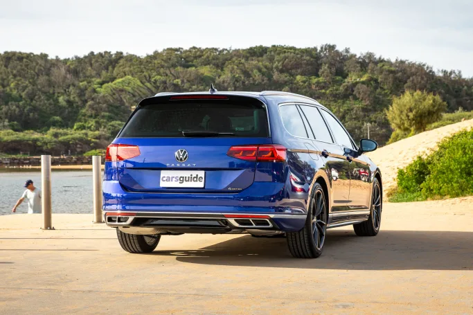
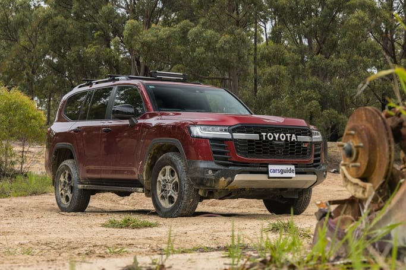

A car is any four-wheeled, self-propelled vehicle that is designed to carry passengers rather than cargo. (Image: Tom White)

The hatchback is generally compact in dimension. (Image: Tom White)

The sedan was the worlds most popular choice of vehicle type in the past. (Image: Dean McCartney)

A wagon has an extended roof that allows for the cabin and cargo area to be integrated. (Image: Tom White)

SUVs now dominate the Australian sales charts. (Image: Glen Sullivan)
A coupé is by definition a two-door car. (Image: James Cleary)

The tray is a defining principle of the Ute. (Image: Marcus Craft)

A people mover will accommodate seven or eight occupants. (Image: Glen Sullivan)